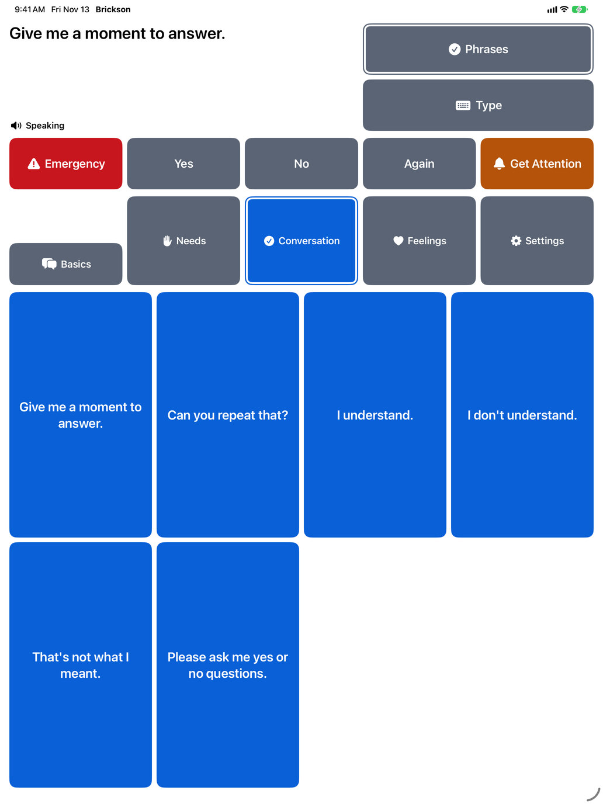
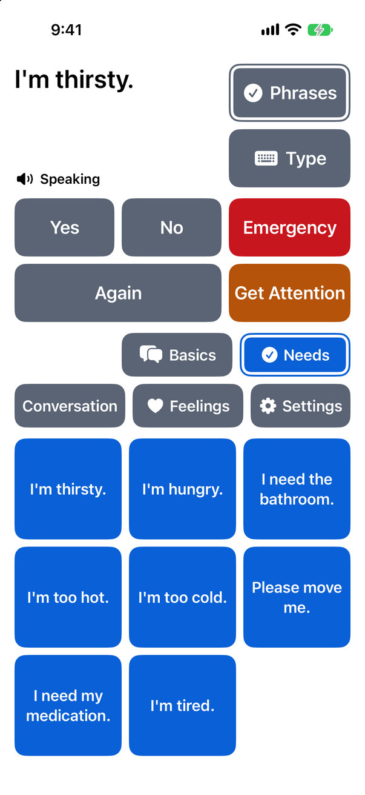
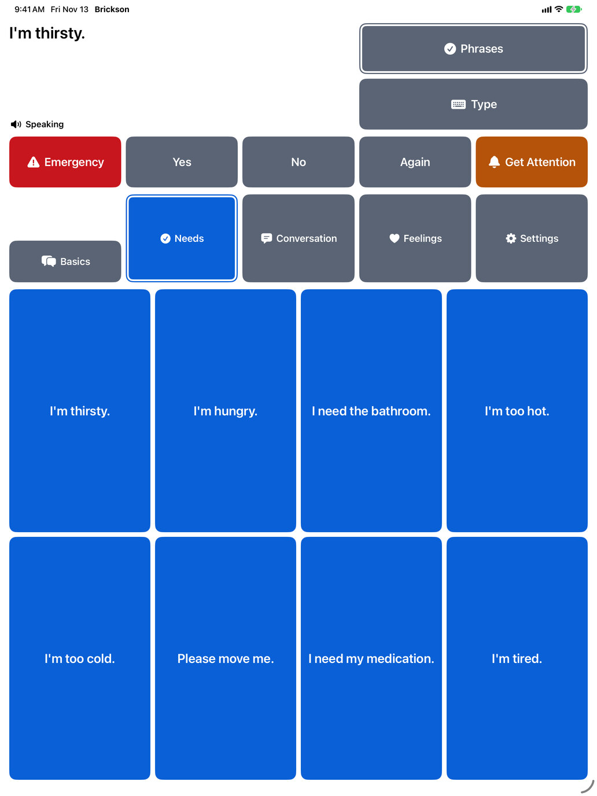
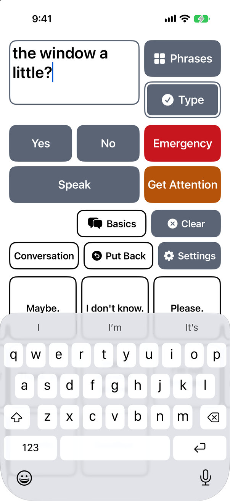
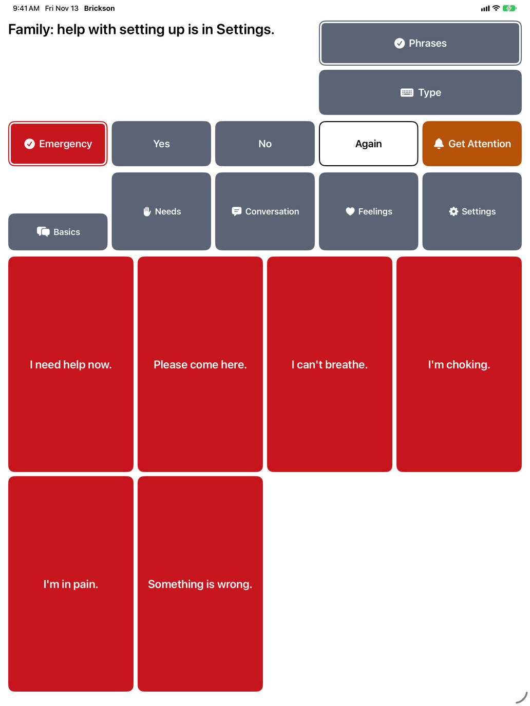
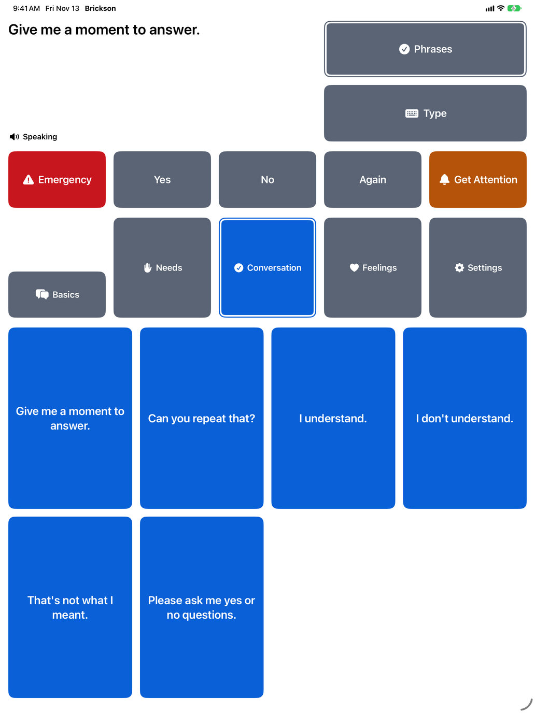

Your words. Still yours.
Brickson is an app that speaks for people living with ALS. Choose a phrase or type a message, and Brickson says it aloud at once, in your own Personal Voice if you have made one and allow Brickson to use it.
In development for iPhone and iPad. Not on the App Store yet.


See it in use
A recording of Brickson on an iPad, about 25 seconds long. It has no sound, so the steps it shows are written out here.
- Home opens on Basics, with a note for the family at the top: “Family: help with setting up is in Settings.”
- Conversation is chosen, then “Give me a moment to answer.” Brickson says it, and the words take the note's place at the top.
- Needs is chosen, then “I'm thirsty.” Brickson says it.
- Type is chosen. An empty box for typing takes the message's place, and Apple's keyboard opens over the lower phrases. No button changes place, but Again becomes Speak, Conversation and Feelings become Clear and Put Back, and the phrases are dimmed.
- “Could you open the window a little?” is typed, and Speak says it.
- Phrases closes the keyboard and brings back the Needs phrases. The typed message stays at the top.
How Brickson works
Home is Brickson's main screen: the message at the top, then Emergency, Yes, No, Again and Get Attention, then the categories and their phrases. Nothing on it moves on its own.
One choice speaks
Choose a phrase and Brickson says it straight away. There is no confirm step. The words stay at the top of the screen, so the person listening can read them too, and Again says them once more.
Phrases are kept in categories, such as Basics, Needs and Conversation. The buttons are never reordered by how often or how recently they are used.

Type anything else
Choose Type to write a message with Apple's keyboard. Speak, or the keyboard's Return key, says the whole message, and it stays so it can be said again or added to.
When the keyboard opens, nothing else on the screen moves. Emergency, Yes, No and Get Attention stay above it.

Emergency and Get Attention stay on Home
Emergency shows the emergency phrases with one choice, even while typing, and each of them speaks at once. Get Attention plays a repeating tone to call someone into the room, and Stop, in a separate place, ends it.
Neither calls emergency services or sends anyone a message. The phrases and the tone play from the iPhone or iPad, or from headphones or a speaker connected to it. Nobody has heard the tone on a real device yet, so how far it carries has not been checked: what has been checked about Get Attention.

The same layout, from touch to Eye Tracking
In Settings, Family Setup asks every way the screen is reached: touch, Voice Control, Switch Control, Eye Tracking, Head Tracking, or someone else helping. For Switch Control, Head Tracking or Eye Tracking, Home makes its smaller buttons larger on an iPad, as far as the screen has room, and every button keeps its place among the others. There is nothing new to learn.
Until that question is answered, Home on an iPad starts at the largest sizes its screen has room for. The other pictures on this page show the sizes for touch.

Switch Control, Head Tracking and Eye Tracking are Apple's own features; Brickson has no eye, head or switch tracking of its own. The larger sizes have not yet been tried on a real iPad, and an iPhone keeps the sizes for touch. Accessibility in Brickson says what has been checked so far.
Built on Apple's own accessibility features
Brickson is made only of Apple's standard controls, the kind VoiceOver, Voice Control, Switch Control and Eye Tracking are built to use. See what is in place today, how each part has been checked, and what has not been checked yet.
Accessibility in BricksonBrickson never sends us your words
No accounts, ads, analytics or tracking. What you add or type is kept on your iPhone or iPad, and copies leave it only in ways you choose, such as a backup.
Brickson's privacy policyA note from the creator
Why Brickson?
Brickson is a name my brother made up as a teenager. More than twenty years later, it still makes our family smile.
My brother died of ALS. I’m building Brickson in his memory, to help people living with ALS keep expressing themselves, in their own words.
— Avery Dedmon, creator of Brickson
Questions and answers
Can I get Brickson yet?
Not yet. Brickson is still being built and tested, and it is not on the App Store. This page will say when it is.
What does it need?
An iPhone or iPad with iOS 26 or iPadOS 26, or later. Brickson is in English for now.
Does it need an account or the internet?
No. There is no account to make, and the speech is made on your device by iOS, so Brickson needs no internet connection.
Can it speak in my own voice?
Yes, if you have made a Personal Voice and allow Brickson to use it. Personal Voice is an Apple feature that you create in the Settings app: Create a Personal Voice (Apple Support).
Does Emergency call for help?
No. Emergency shows phrases to speak, and Get Attention sounds a tone. Neither calls emergency services or sends a message.
Can we change the phrases?
Yes. Open Settings, then Family Setup, then Phrases and Categories. There you can add, change, move or delete phrases and categories, and save a backup. Choosing a phrase on Home only ever speaks it.
Write to us
Questions, problems and ideas are all welcome, and we will write back. There is no need to include medical details; if any would help, we will ask.
This address is not for emergencies. In an emergency, call your local emergency number.